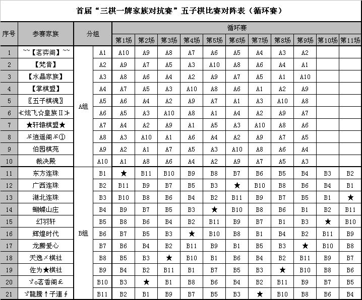

QQ首届“三棋一牌家族对抗赛”大型比赛报名帖
#1 QQ首届“三棋一牌家族对抗赛”大型比赛报名帖 作者：有志青年 发表时间：2008-6-3 7:53:37
#2 Re:QQ首届“三棋一牌家族对抗赛”大型比赛报名帖 作者：有志青年 发表时间：2008-6-18 18:42:09

一．比赛规则：
1、比赛场地：QQ游戏五子棋，三手交换五手两打2房间。
2、比赛规则：比赛采用职业规则黑指定开局，三手交换、五手两打，每场比赛选手必须下满三局，最终累积四名选手积分，积分多者该轮胜积大分2分。
详细规则：
(1)黑首子（总黑1）必须着在天元，如对手指出黑违反此条规则，则裁判警告黑方棋手一次，由黑重新开局；
(2)白首子（总白2）必须按黑方指定开局落子(直指或斜指)，如对手指出白违反此条规则，则裁判警告白方棋手一次，由黑重新开局；注意：禁开妖刀，禁止对称打点。
(3)以下按照“有禁手，三手交换，五手两打”的规则正常进行；
(4)严禁悔棋，无论对方同意悔棋与否，裁判立即将悔棋者判负，错点“悔棋”键者应立即示意裁判，以免造成误会；
(5)每盘棋限时15分钟，然后每次落子限时1分钟，超时判负。
(6)当总子数超过40以上，任一方才可提出和棋，对方同意后，判定和棋，不同意则继续落子。白棋能抓黑满盘禁手则为和棋。
3、比赛流程：
(1)21个家族分为A、B两组打循环赛，每组家族积分前4进入8强；
(2)8强交叉淘汰赛。（具体比赛流程请见比赛对阵表）
4、比赛先后手：比赛选手每人先手开局两局。
5、在参加每轮比赛前，组委会将在比赛群另发单轮比赛安排，请各领队在群内确认本轮比赛座位和对手安排，如果有疑问请尽快与组委会联系。
6、比赛都是在晚上20:00分正式开始,截止上桌的时间是20:15,在截止上桌时间到达时,选手未就座，则该选手成绩判为弃权负。参赛选手在比赛后,截止上桌宣布 前,自己的对手未到的情况下,必须要坐在自己的座位上,(不要按开始键),以等待对手的到来或者等待裁判宣布对手弃权,如果不在自己的位子上等待,到了截止上 桌的时刻你即使在比赛现场,然而不在自己的座位,也将被判作弃权。
7、奖项积分和统计。本次比赛以比赛积分决定排名。按最后名次给予奖励。
比赛积分规则：胜一盘获得小积分1，平一盘获得小积分0.5，负一盘获得小积分0
如果出现与奖励和升降级相关的同分现象，则加赛一局，否则按同分处理，排名相同。
8、选手如果因电脑网络等问题出现断线的情况，以总裁判判决为准。
9、每场比赛结束后，选手不得再按开始键，等候裁判抓图统计成绩并宣布结果后方能离开座位。选手要注意随时掌握比赛的编组情况，听候裁判的安排参加比赛 。
10、比赛过程中，参赛选手禁止发表交流式的对话，或者有不文雅行为。
二．裁判规则：
<一>比赛纪律
1、比赛时间：比赛时间为每周五、周六20：00，所有裁判应于19：30～19：35在裁判群中与裁判长对表。19：50前进入比赛房间，准备就位。
2、比赛迟到处理：开始时间，以裁判长宣布为准。从裁判长宣布比赛开始时统计超时。比赛允许迟到时间为15分钟，如20：15未到场的（时间以裁判长公开倒计时为准），报知相关副裁判长，确认后宣布迟到方当桌0：3判负。
3、赛前准备：选手就位后当值裁判应立即核对以下内容：
a、选手名称和ID号码（是否为家族报名ID，是否按要求穿家族马甲）；
b、坐向（先后手）；
c、选手不得隐身登录；
d、允许相同IP玩家游戏；
发现上述情况有误或有违比赛规定时，及时纠正，如有疑问，上报相关副裁判长，由裁判委员会与该家族负责人协调解决，如无法达到比赛规定要求的，由相关副裁判长宣布违规家族当盘判负，改正后开始下一盘。如开赛15分钟后裁判管理员巡场时仍发现有此类情况，扣除当值裁判所属家族小分0.5分/桌。
4、选手不得说话：开始比赛后，选手以及替补选手不允许在比赛桌内发出任何信息（除了换手。信息包括表情，符号等任何字符，为避免纠纷，盘间休息也不得说话），一经发现，裁判保存裁图（要求抓取整个对阵的大图，要有说话内容，以及2名选手名字和比赛号码，否则为无效证据），发送到裁判群，由相关副裁判长认定并作出相应处罚：淘汰赛阶段，选手发表与换手无关的信息第一次由裁判给予警告，再犯直接当盘判负（局间休息说话的，上盘成绩判负），开始下一盘比赛。先说话的一方为直接责任人。
5、选手离开桌子处理：如果胜负未分情况下选手离开桌子，裁判应告知裁判长或副裁判长，由其通过家族领队告知选手回到座位。如5分钟选手未返回比赛，离桌方当盘判负，继续下一盘。
6、下满3盘：比赛必须下满3盘，如果在前2盘胜负已分情况下选手离开桌子，裁判应告知相关副裁判长，由其通知选手回到座位。如5分钟选手未返回比赛，第3盘先离开桌子方当盘判负。
7、盘间休息：每盘间
#3 QQ游戏首届“三棋一牌家族对抗赛”五子棋比赛循环赛第1场 作者：有志青年 发表时间：2008-6-19 7:35:08
比赛时间:2008年6月20日星期五晚20:00
比赛地点:QQ游戏五子棋三手交换五手两打2房间(61—100桌)
比赛局数:两局(第1局先手先开局,第2局后手先开局)
A组(61—80桌)
61—64桌:[茗弈阁]VS[裁决殿]
*61桌:[茗弈阁]选手01 VS [裁决殿]选手01---[茗弈阁]先手★[梵音]裁判01
*62桌:[茗弈阁]选手02 VS [裁决殿]选手02---[茗弈阁]先手★[梵音]裁判02
*63桌:[茗弈阁]选手03 VS [裁决殿]选手03---[裁决殿]先手★[伯园]裁判01
*64桌:[茗弈阁]选手04 VS [裁决殿]选手04---[裁决殿]先手★[伯园]裁判02
65—68桌:[梵音]VS[伯园]
*65桌:[梵音]选手01 VS [伯园]选手01---[梵音]先手★[水晶]裁判01
*66桌:[梵音]选手02 VS [伯园]选手02---[梵音]先手★[水晶]裁判02
*67桌:[梵音]选手03 VS [伯园]选手03---[伯园]先手★[逍遥阁]裁判01
*68桌:[梵音]选手04 VS [伯园]选手04---[伯园]先手★[逍遥阁]裁判02
69—72桌:[水晶]VS[逍遥阁]
*69桌:[水晶]选手01 VS [逍遥阁]选手01---[水晶]先手★[掌棋盟]裁判01
*70桌:[水晶]选手02 VS [逍遥阁]选手02---[水晶]先手★[掌棋盟]裁判02
*71桌:[水晶]选手03 VS [逍遥阁]选手03---[逍遥阁]先手★[轩辕]裁判01
*72桌:[水晶]选手04 VS [逍遥阁]选手04---[逍遥阁]先手★[轩辕]裁判02
73—76桌:[掌棋盟]VS[轩辕]
*73桌:[掌棋盟]选手01 VS [轩辕]选手01---[掌棋盟]先手★[五子棋魂]裁判01
*74桌:[掌棋盟]选手02 VS [轩辕]选手02---[掌棋盟]先手★[五子棋魂]裁判02
*75桌:[掌棋盟]选手03 VS [轩辕]选手03---[轩辕]先手★[炫飞皇族]裁判01
*76桌:[掌棋盟]选手04 VS [轩辕]选手04---[轩辕]先手★[炫飞皇族]裁判02
77—80桌:[五子棋魂]VS[炫飞皇族]
*77桌:[五子棋魂]选手01 VS [炫飞皇族]选手01---[五子棋魂]先手★[茗弈阁]裁判01
*78桌:[五子棋魂]选手02 VS [炫飞皇族]选手02---[五子棋魂]先手★[茗弈阁]裁判02
*79桌:[五子棋魂]选手03 VS [炫飞皇族]选手03---[炫飞皇族]先手★[裁决殿]裁判01
*80桌:[五子棋魂]选手04 VS [炫飞皇族]选手04---[炫飞皇族]先手★[裁决殿]裁判02
B组(81—100桌)
81—84桌:[广西连珠]VS[龍騰子連]
*81桌:[广西连珠]选手01 VS [龍騰子連]选手01---[广西连珠]先手★[湖北连珠]裁判01
*82桌:[广西连珠]选手02 VS [龍騰子連]选手02---[广西连珠]先手★[湖北连珠]裁判02
*83桌:[广西连珠]选手03 VS [龍騰子連]选手03---[龍騰子連]先手★[茗香阁]裁判01
*84桌:[广西连珠]选手04 VS [龍騰子連]选手04---[龍騰子連]先手★[茗香阁]裁判02
85—88桌:[湖北连珠]VS[茗香阁]
*85桌:[湖北连珠]选手01 VS [茗香阁]选手01---[湖北连珠]先手★[蝴蝶山庄]裁判01
*86桌:[湖北连珠]选手02 VS [茗香阁]选手02---[湖北连珠]先手★[蝴蝶山庄]裁判02
*87桌:[湖北连珠]选手03 VS [茗香阁]选手03---[茗香阁]先手★[佐为棋社]裁判01
*88桌:[湖北连珠]选手04 VS [茗香阁]选手04---[茗香阁]先手★[佐为棋社]裁判02
89—92桌:[蝴蝶山庄]VS[佐为棋社]
*89桌:[蝴蝶山庄]选手01 VS [佐为棋社]选手01---[蝴蝶山庄]先手★[幻羽轩]裁判01
*90桌:[蝴蝶山庄]选手02 VS [佐为棋社]选手02---[蝴蝶山庄]先手★[幻羽轩]裁判02
*91桌:[蝴蝶山庄]选手03 VS [佐为棋社]选手03---[佐为棋社]先手★[天逸棋社]裁判01
*92桌:[蝴蝶山庄]选手04 VS [佐为棋社]选手04---[佐为棋社]先手★[天逸棋社]裁判02
93—96桌:[幻羽轩]VS[天逸棋社]
*93桌:[幻羽轩]选手01 VS [天逸棋社]选手01---[幻羽轩]先手★[辉煌时代]裁判01
*94桌:[幻羽轩]选手02 VS [天逸棋社]选手02---[幻羽轩]先手★[辉煌时代]裁判02
*95桌:[幻羽轩]选手03 VS [天逸棋社]选手03---[天逸棋社]先手★[龙腾爱心]裁判01
*96桌:[幻羽轩]选手04 VS [天逸棋社]选手04---[天逸棋社]先手★[龙腾爱心]裁判02
97—100桌:[辉煌时代]VS[龙腾爱心]
*97桌:[辉煌时代]选手01 VS [龙腾爱心]选手01---[辉煌时代]先手★[广西连珠]裁判01
*98桌:[辉煌时代]选手02 VS [龙腾爱心]选手02---[辉煌时代]先手★[广西连珠]裁判02
*99桌:[辉煌时代]选手03 VS [龙腾爱心]选手03---[龙腾爱心]先手★[龍騰子連]裁判01
*100桌:[辉煌时代]选手04 VS [龙腾爱心]选手04---[龙腾爱心]先手★[龍騰子連]裁判02
#4 QQ游戏首届“三棋一牌家族对抗赛”五子棋比赛循环赛第2场 2008年6月21日 作者：有志青年 发表时间：2008-6-19 7:35:39
比赛时间:2008年6月21日星期六晚20:00
比赛地点:QQ游戏五子棋三手交换五手两打2房间
比赛局数:两局(第1局先手先开局,第2局后手先开局)
A组(61—80桌)
61—64桌:[茗弈阁]VS[伯园]
*61桌:[茗弈阁]选手01 VS [伯园]选手01---[茗弈阁]先手★[裁决殿]裁判01
*62桌:[茗弈阁]选手02 VS [伯园]选手02---[茗弈阁]先手★[裁决殿]裁判02
*63桌:[茗弈阁]选手03 VS [伯园]选手03---[伯园]先手★[逍遥阁]裁判01
*64桌:[茗弈阁]选手04 VS [伯园]选手04---[伯园]先手★[逍遥阁]裁判02
65—68桌:[裁决殿]VS[逍遥阁]
*65桌:[裁决殿]选手01 VS [逍遥阁]选手01---[裁决殿]先手★[梵音]裁判01
*66桌:[裁决殿]选手02 VS [逍遥阁]选手02---[裁决殿]先手★[梵音]裁判02
*67桌:[裁决殿]选手03 VS [逍遥阁]选手03---[逍遥阁]先手★[轩辕]裁判01
*68桌:[裁决殿]选手04 VS [逍遥阁]选手04---[逍遥阁]先手★[轩辕]裁判02
69—72桌:[梵音]VS[轩辕]
*69桌:[梵音]选手01 VS [轩辕]选手01---[梵音]先手★[水晶]裁判01
*70桌:[梵音]选手02 VS [轩辕]选手02---[梵音]先手★[水晶]裁判02
*71桌:[梵音]选手03 VS [轩辕]选手03---[轩辕]先手★[炫飞皇族]裁判01
*72桌:[梵音]选手04 VS [轩辕]选手04---[轩辕]先手★[炫飞皇族]裁判02
73—76桌:[水晶]VS[炫飞皇族]
*73桌:[水晶]选手01 VS [炫飞皇族]选手01---[水晶]先手★[掌棋盟]裁判01
*74桌:[水晶]选手02 VS [炫飞皇族]选手02---[水晶]先手★[掌棋盟]裁判02
*75桌:[水晶]选手03 VS [炫飞皇族]选手03---[炫飞皇族]先手★[五子棋魂]裁判01
*76桌:[水晶]选手04 VS [炫飞皇族]选手04---[炫飞皇族]先手★[五子棋魂]裁判02
77—80桌:[掌棋盟]VS[五子棋魂]
*77桌:[掌棋盟]选手01 VS [五子棋魂]选手01---[掌棋盟]先手★[茗弈阁]裁判01
*78桌:[掌棋盟]选手02 VS [五子棋魂]选手02---[掌棋盟]先手★[茗弈阁]裁判02
*79桌:[掌棋盟]选手03 VS [五子棋魂]选手03---[五子棋魂]先手★[伯园]裁判01
*80桌:[掌棋盟]选手04 VS [五子棋魂]选手04---[五子棋魂]先手★[伯园]裁判02
B组(81—100桌)
81—84桌:[东方连珠]VS[龍騰子連]
*81桌:[东方连珠]选手01 VS [龍騰子連]选手01---[东方连珠]先手★[广西连珠]裁判01
*82桌:[东方连珠]选手02 VS [龍騰子連]选手02---[东方连珠]先手★[广西连珠]裁判02
*83桌:[东方连珠]选手03 VS [龍騰子連]选手03---[龍騰子連]先手★[佐为棋社]裁判01
*84桌:[东方连珠]选手04 VS [龍騰子連]选手04---[龍騰子連]先手★[佐为棋社]裁判02
85—88桌:[广西连珠]VS[佐为棋社]
*85桌:[广西连珠]选手01 VS [佐为棋社]选手01---[广西连珠]先手★[湖北连珠]裁判01
*86桌:[广西连珠]选手02 VS [佐为棋社]选手02---[广西连珠]先手★[湖北连珠]裁判02
*87桌:[广西连珠]选手03 VS [佐为棋社]选手03---[佐为棋社]先手★[天逸棋社]裁判01
*88桌:[广西连珠]选手04 VS [佐为棋社]选手04---[佐为棋社]先手★[天逸棋社]裁判02
89—92桌:[湖北连珠]VS[天逸棋社]
*89桌:[湖北连珠]选手01 VS [天逸棋社]选手01---[湖北连珠]先手★[蝴蝶山庄]裁判01
*90桌:[湖北连珠]选手02 VS [天逸棋社]选手02---[湖北连珠]先手★[蝴蝶山庄]裁判02
*91桌:[湖北连珠]选手03 VS [天逸棋社]选手03---[天逸棋社]先手★[龙腾爱心]裁判01
*92桌:[湖北连珠]选手04 VS [天逸棋社]选手04---[天逸棋社]先手★[龙腾爱心]裁判02
93—96桌:[蝴蝶山庄]VS[龙腾爱心]
*93桌:[蝴蝶山庄]选手01 VS [龙腾爱心]选手01---[蝴蝶山庄]先手★[幻羽轩]裁判01
*94桌:[蝴蝶山庄]选手02 VS [龙腾爱心]选手02---[蝴蝶山庄]先手★[幻羽轩]裁判02
*95桌:[蝴蝶山庄]选手03 VS [龙腾爱心]选手03---[龙腾爱心]先手★[辉煌时代]裁判01
*96桌:[蝴蝶山庄]选手04 VS [龙腾爱心]选手04---[龙腾爱心]先手★[辉煌时代]裁判02
97—100桌:[幻羽轩]VS[辉煌时代]
*97桌:[幻羽轩]选手01 VS [辉煌时代]选手01---[幻羽轩]先手★[东方连珠]裁判01
*98桌:[幻羽轩]选手02 VS [辉煌时代]选手02---[幻羽轩]先手★[东方连珠]裁判02
*99桌:[幻羽轩]选手03 VS [辉煌时代]选手03---[辉煌时代]先手★[龍騰子連]裁判01
*100桌:[幻羽轩]选手04 VS [辉煌时代]选手04---[辉煌时代]先手★[龍騰子連]裁判02
注: [茗香阁]轮空
#5 Re:QQ首届“三棋一牌家族对抗赛”大型比赛报名帖 作者：五子酷 发表时间：2008-6-19 8:09:07
A组和B组有啥区别？ 星号代表轮空？
#6 Re:QQ首届“三棋一牌家族对抗赛”大型比赛报名帖 作者：孤傲 发表时间：2008-6-19 9:28:48
好复杂啊~!!!明天就开赛了啦~嘻嘻,我是备用裁判
#7 Re:QQ首届“三棋一牌家族对抗赛”大型比赛报名帖 作者：有志青年 发表时间：2008-6-19 9:57:58
记得发棋谱哟！！！！#8 Re:QQ首届“三棋一牌家族对抗赛”大型比赛报名帖 作者：17号蓝星仔 发表时间：2008-6-19 13:26:22
这些比赛对局质量很高的哦
#9 Re:QQ首届“三棋一牌家族对抗赛”大型比赛报名帖 作者：美窝窝俊 发表时间：2008-6-20 15:28:47
我们一般人可以去学习观战么？#10 Re:QQ首届“三棋一牌家族对抗赛”大型比赛报名帖 作者：雅匪 发表时间：2008-6-21 18:23:34
星月军团土耳其是本届欧洲杯的逆转王，五子也是属星月的看来带“其”的几个社都有可能爆炸，
不不是爆冷
#11 Re:QQ首届“三棋一牌家族对抗赛”大型比赛报名帖 作者：雅匪 发表时间：2008-6-21 20:07:25
比赛时间:2008年6月21日星期六晚20:00
比赛地点:QQ游戏五子棋三手交换五手两打2房间
比赛局数:两局(第1局先手先开局,第2局后手先开局)
两回了，貌似又似晃荡银？！
#12 Re:QQ首届“三棋一牌家族对抗赛”大型比赛报名帖 作者：汪洋孤舟 发表时间：2008-6-24 23:33:14
来晚了，呵呵！不过早了也没用，我不是棋社的，哎…………